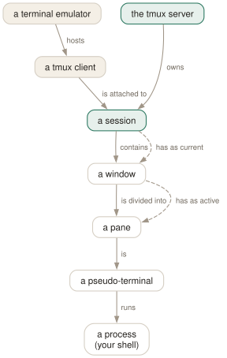

Day 01
The mental model
Server, session, window, pane — and never losing a shell again.
By the end of today you can
- explain what the tmux server is and why your shells survive a dropped ssh connection
- create, detach from, list and re-attach to named sessions without thinking about it
- reach any tmux command two ways: through a key binding and through the command prompt
The thing nobody tells you first
tmux is not a program that draws split screens. tmux is a server that owns a set of running terminals, plus a thin client that renders one of them into whatever terminal you happen to be sitting at. Every feature in the manual page follows from that one design decision, so it is worth ten minutes.
When you type tmux the first time, two processes appear. One is a server — it detaches, daemonises, and communicates over a unix socket in /tmp/tmux-$UID/. The other is a client attached to your terminal, whose entire job is to send your keystrokes to the server and paint what comes back.
The consequence is the reason most people install tmux: your shells do not belong to your terminal any more. Close the terminal, lose the ssh connection, reboot your laptop while ssh'd into a build box — the client dies, the server does not notice or care, and the processes keep running. You reattach later and find the scrollback still scrolling.
Four nouns and one verb
Learn these in this order. Everything else in the course hangs off them.
- server
- One per user per socket. Starts on demand, exits when the last session is gone. You almost never address it directly, but
tmux kill-serverexists for when you have made a mess. - session
- A named collection of windows — the unit you attach to and detach from. One project, one session, is the habit worth forming. Sessions have names (
work) and ids ($0). - window
- Occupies the whole screen; appears as an entry in the status line at the bottom. Think browser tab. Tomorrow's lesson.
- pane
- A rectangle inside a window, and a real pseudo-terminal with its own shell. Think split view. Day 3.
- client
- A terminal currently displaying a session. Two clients can show the same session at once, which is how pair-programming over ssh works.

Your first session, narrated
Run it with a name. Anonymous sessions get numbers (0, 1…) and you will not remember which was which by Thursday.
$ tmux new -s day1
The screen clears and you get something like this:
jhrcek@thinkpad ~ $
That green bar is the status line, and it is already telling you a lot. [day1] is the session name. 0:bash is window 0, named after the program running in it, and the * means it is the current window. On the right is the active pane's title and the clock. You will rebuild this bar to your own taste on Day 10.
The prefix key
tmux has to distinguish “this keystroke is for you” from “this keystroke is for vim”. It does that with a prefix: press C-b, release, then press the command key. C-bd is two separate keystrokes, not a chord.
Try the harmless one: C-bt draws a large clock in the pane. Press any key to dismiss it. If that worked, your prefix is reaching tmux.
Two escape hatches you need immediately. C-b? lists every binding (it opens a scrollable read-only pane; leave it with q). And C-b: opens the command prompt at the bottom of the screen, where you can type any tmux command by name.
Detach, list, attach
This is the whole point of the tool, so make it reflex. C-bd detaches. Your terminal returns to the shell you started from and prints the reason:
$ tmux new -s day1
[detached (from session day1)]
$ tmux ls
day1: 1 windows (created Sat Sep 5 09:14:02 2026)
$ tmux attach -t day1
Targets are forgiving: -t day1, -t day and -t d all work as long as the prefix is unambiguous, and a glob like -t 'da*' works too. Day 7 makes the full target grammar explicit.
Attaching a second terminal to the same session does not steal it — both clients see the same windows, and tmux sizes the window to the smaller of the two terminals. To evict the other client instead, attach with -d.
How things end
Three levels of destruction, and they cascade upwards:
- Exit the shell in a pane (
exitor C-d) and the pane closes. - When the last pane in a window closes, the window closes.
- When the last window in a session closes, the session is destroyed — and every client attached to it is detached. If that was the last session, the server exits and
tmux lsstarts saying “no server running”.
From outside, tmux kill-session -t day1 does it deliberately. tmux kill-server ends everything at once; it is the right move roughly once a year and the wrong move the other times.
Today's habit
None of this becomes yours by reading. Pick one long-running thing you do — a dev server, a log tail, an ssh session to a box you use daily — and move it inside a named tmux session today. Then do the drills.
Tomorrow: windows, so that one session can hold your editor, your server and your logs without a single split.
New vocabulary
Keys
| Key | Does |
|---|---|
| C-bd | Detach this client. The session keeps running. |
| C-b$ | Rename the current session. |
| C-b? | List every key binding. q to leave. |
| C-b: | Open the tmux command prompt. |
| C-bt | Show a clock — a harmless way to prove the prefix works. |
| C-bC-b | Send a literal C-b to the program in the pane. |
Commands
| Command | Does |
|---|---|
tmux | Start the server if needed and create a session, attached. |
tmux new -s work | Create a session named work. |
tmux new -A -s work | Attach to work, creating it only if absent. |
tmux ls | List sessions on this server. Alias for list-sessions. |
tmux attach -t work | Attach this terminal to work. |
tmux attach -d -t work | Attach, detaching any other client first. |
tmux detach | Detach the current client, from inside or by target. |
tmux rename-session api | Rename the current session. |
tmux kill-session -t work | Destroy a session and everything in it. |
tmux kill-server | Destroy every session. The nuclear option. |
Drillsdo these in a real terminal, today
Self-check
Answer out loud first, then unfold.
Your laptop's ssh connection to a server drops mid-build. What exactly survived, and what died?
The client died — it was the process attached to your dying terminal. The tmux server on the remote host, and every session, window, pane and running process inside it, is untouched. tmux noticed the client vanished and simply marked the session unattached.
Reconnect and run tmux attach. Your build is still scrolling.
What is the difference between tmux new -s work and tmux new -A -s work?
Without -A the second invocation fails with duplicate session: work. With -A, new-session behaves like attach-session when the name already exists. It is the only form worth putting in your shell aliases, because it is idempotent.
You are inside tmux running an editor that itself wants C-b. How do you feed it through?
Press the prefix twice: C-bC-b. The binding for C-b inside the prefix table is send-prefix, which passes the key on to the pane instead of treating it as the start of a tmux command.
Why does tmux ls sometimes say “no server running”, even though you ran tmux an hour ago?
Because the server exits when its last session is destroyed — that is the exit-empty server option, on by default. Detaching leaves sessions alive; exiting the last shell in the last window of the last session destroys them, and then the server has nothing to do.
Cheat sheet
The whole of Day 1 in six lines. Everything else is elaboration.
tmux new -A -s main # start or resume; the only invocation you need
C-b d # detach — session keeps running
tmux ls # what is running
tmux attach -t main # come back (-d to evict other clients)
C-b ? # every key binding; q to leave
C-b : # command prompt: any command, by name
Everything through Day 01
Keys
| Key | Does |
|---|---|
| C-bd | Detach this client. The session keeps running. |
| C-b$ | Rename the current session. |
| C-b? | List every key binding. q to leave. |
| C-b: | Open the tmux command prompt. |
| C-bt | Show a clock — a harmless way to prove the prefix works. |
| C-bC-b | Send a literal C-b to the program in the pane. |
Commands
| Command | Does |
|---|---|
tmux | Start the server if needed and create a session, attached. |
tmux new -s work | Create a session named work. |
tmux new -A -s work | Attach to work, creating it only if absent. |
tmux ls | List sessions on this server. Alias for list-sessions. |
tmux attach -t work | Attach this terminal to work. |
tmux attach -d -t work | Attach, detaching any other client first. |
tmux detach | Detach the current client, from inside or by target. |
tmux rename-session api | Rename the current session. |
tmux kill-session -t work | Destroy a session and everything in it. |
tmux kill-server | Destroy every session. The nuclear option. |